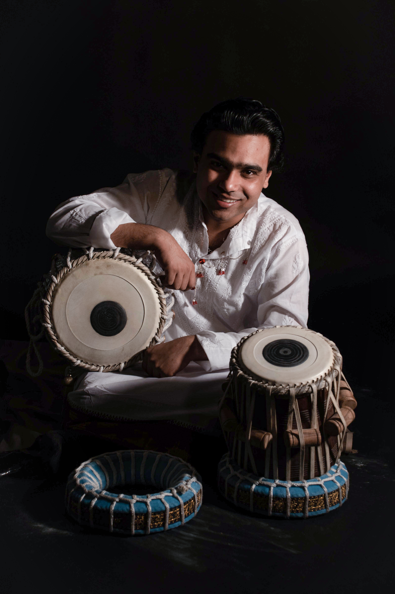

Tabla Virtuoso · Banaras Gharana · United Kingdom

Manmohan Dogra is one of the most compelling voices in the world of Hindustani classical percussion today. A gifted tabla artist rooted in the revered Banaras Gharana, Manmohan carries more than two decades of dedicated practice within him — yet performs with a freshness that transcends tradition.
Now based in the United Kingdom, he has become a celebrated ambassador of Indian classical music on the global stage, captivating audiences from Delhi to Edinburgh with his extraordinary command of the tabla.
Born into a family with a business background, Manmohan's earliest musical memories are of his mother, Renu Dogra, singing devotional bhajans at home. His formal journey into music began at school, where his music teacher Renuka recognised his innate sense of rhythm and set him on the path of tabla — an early inspiration that planted the seed for a lifelong devotion to Indian classical percussion.
His main Guru — and the defining force in his artistry — is Sangeet Natak Akademi Awardee Pandit Vijay Shankar Mishra, an eminent musicologist and master of the Banaras tradition. Under Pt. Mishra's rigorous and nurturing guidance, Manmohan immersed himself in the depths of the Banaras Baaj style. The Banaras Gharana is renowned for its lyrical expressiveness and rich resonance, qualities that define his own sound. He further broadened his rhythmic palette by studying the Delhi and Ajrada Gharanas, making him one of the few artists today who can fluently speak the language of multiple tabla traditions.
Complementing his percussive mastery, Manmohan also underwent vocal training under Pt. Dr. Prabhakar Kashyap, deepening his understanding of melodic structure and rhythmic interplay central to classical accompaniment. He cites the late Ustad Zakir Hussain as a towering inspiration — admiring not only his unmatched technical brilliance, but his ability to communicate with an audience through pure rhythm.
A single dha or tirkit should immediately reveal that it comes from Banaras — without need for explanation. — Manmohan Dogra
| Gharana | Banaras Gharana (with knowledge of Delhi & Ajrada) |
| Guru | SNA Pt. Vijay Shankar Mishra |
| Early Inspiration | Renuka (school music teacher) |
| Experience | 20+ Years |
| Instrument | Tabla (Solo & Accompaniment) |
| Based In | United Kingdom |
| Influences | Ustad Zakir Hussain · Pt. Sanju Sahay · Pt. Kumar Bose · Pt. Anindo Chatterjee · Pt. Yogesh Samsi |
| MSc Music Business | Edinburgh Napier University, United Kingdom |
| Master of Music (Percussion) | University of Delhi, India |
| Bachelor of Music (Percussion) | University of Delhi, India |
What distinguishes Manmohan Dogra beyond his technical mastery is his capacity to make every performance a journey. Critics who have witnessed him describe a 'quiet intensity' on stage — his improvisations unfold not as displays of virtuosity, but as narratives: each kaida a conversation, each rela an emotional arc. His ability to shift seamlessly from introspective, meditative passages to explosive crescendos holds an audience in thrall, crossing the boundary between seasoned classical listeners and those entirely new to Indian music.
Manmohan is equally devoted to the future of his art as to its past. Through workshops in schools and universities in both India and the UK, he invests in the next generation of listeners and practitioners. His curiosity about fusion — tabla in dialogue with jazz, Kathak, sitar, and beyond — reflects a conviction that great classical traditions are not static museums, but living, breathing entities capable of speaking to every era.